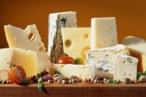

Любая хозяйка знает, что продукты, приготовленные в домашних условиях, вкуснее и полезнее купленных в магазине. Натуральное сливочное масло, рассыпчатый творог, густая сметана, полезный кефир и йогурт и изумительный домашний сыр – все это можно приготовить самостоятельно.
Подробное описание технологии приготовления молочных продуктов, рекомендации, как с помощью трав, специй и фруктов разнообразить их вкус, и оригинальные рецепты, которые позволят дополнить ежедневный рацион полезными и вкусными продуктами без ароматизаторов, консервантов и красителей.